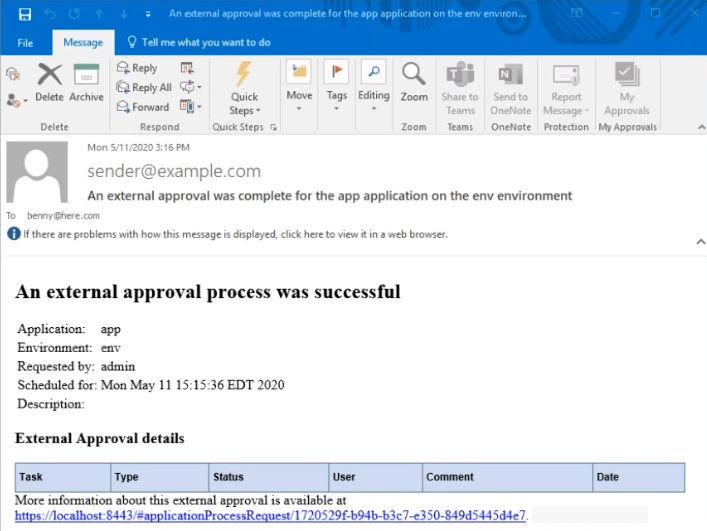

If you have a process step that requires validation on an external application before
deployment, you can create an approval process and assign it to environments. With this approval
process, the deployment runs automatically and only when it is approved.
Before you begin
Ensure that the:
- Notification templates such as Approval Created, Approval Failed, and Approval
Completed exist for use in the approval process. For information about how to
create notification templates, see Creating Notifications in a Notification Scheme.
- External Approval Settings in the System
Settings are configured to use an agent or an agent pool for the
external approval process.
Procedure
-
Navigate to .
-
Click Create.
-
Enter a name for the approval process and specify the working directory.
Optionally, you can provide a process description and add teams to the process.
-
In the process editor, configure the steps that require approval. For help on the process
editor, see Processes.
The external approval process definition is complete.
-
Assign the external approval process to an environment.
-
Click .
-
Enable Require Approvals.
-
Enable No Self-Approvals to prevent yourself from approving the
process.
-
Activate Use Agent Pool for External Approvals to run the approval
process on a group of agents.
If you turn on this option, specify an agent pool in the Agent Pool for External
Approvals field.
-
Select the external approval process to use.
-
Specify an agent for the approval process in the Agent for External
Approvals field.
-
Exclude other processes of the environment from the approval process by choosing processes in
the Exempt Processes list.
-
Save your changes.
The approval process is assigned to the environment.
When an application process runs on the environment, the approver gets an e-mail
notification and can approve or reject the request via e-mail. Subsequently, when the request is
approved or rejected, the requestor is notified with an email. An example of a default
Approval Completed notification template follows.

The deployment starts immediately when the request is approved or runs at the
scheduled time. If a request is rejected or failed, open the Application Process
Request by clicking View Request and check comments on the
approval by clicking the Comment icon in the Actions column.
What to do next
You can verify the status of the request by using any of these methods:
- Go to the Deployment Detail pane on the Reports
tab.
- Check the environment history.
An approved request status is displayed with a Success label. A rejected
request is shown with a External Approval Failed label.
Note: While you export
or import an application, the approval processes are also included in the export or
import.
You can also export and import external approval process individually. While
importing, select Upgrade Process to import an updated and existing approval
process.